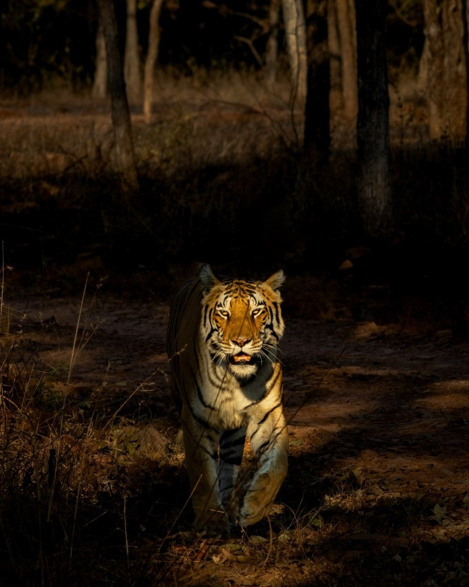

The situation
“She was resting. We were the only gypsy there.”
A tigress lying on a stretch of burnt fireline, completely at ease, in golden afternoon light. No other vehicles, no pressure to get the shot fast. Most advice is about what to do once an animal moves. This frame was decided while she was still resting.
The signal
In a resting big cat, a big, deliberate yawn is very often a transition signal: the last stretch before standing up and moving off. It doesn’t guarantee movement, but it’s a strong enough tell to act on. The yawn was the moment we stopped treating the sighting as static and started treating it as a countdown.
The decision

SHE WALKED THE LINE SHE CHOSEWe asked our driver to start creating space before she’d taken a single step. If she turned back into the bush, we’d lose nothing. If she walked our way, we’d already be clear of her path. She stood, and started marking the fireline exactly as anticipated.
The patrol
Every time she advanced, we reversed. Never fast, never far, just enough to keep the same distance and never block her line. Thirty minutes of that discipline is what actually produced the photographs. Not the yawn, not the decision.